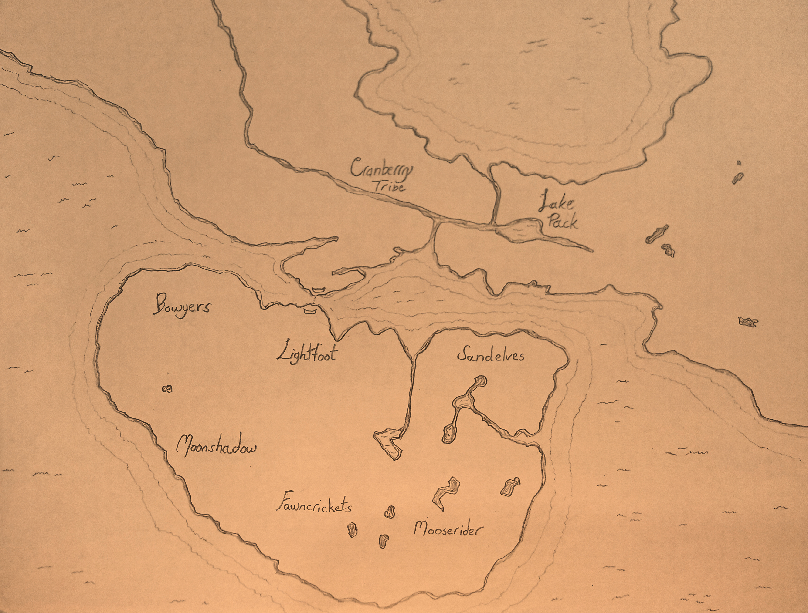

Index
Merennora

Cranberry Tribe
Particularly in tune with fruit bearing plants in the area. Famous for their cranberry wine.
Lake Pack
Particularly fond of the water and fish. Pearls from the region are often sought by magicians.
Bowyers
Tree dwellers that will the trees into shapes of their design. They create bows from fallen branches. The Fletchers were previously a separate tribe. The Fletchers herd geese and collect dropped feathers.
Lightfoot
Trappers with no enemies.
Sandelves
The body is the temple, and the temple shall be full of the best smokes the plants in the region have to offer.
Moonshadow
Moon watchers and astronomers. Glassmakers. They spend the daytime in caves, away from the sunlight.
Fawncrickets
Sibling tribe to Mooserider and particularly fond of the fauna in the area. Deer herders.
Mooserider
Sibling tribe to Fawncrickets and particularly fond of the fauna in the area. Bonding with a moose is associated with adulthood.